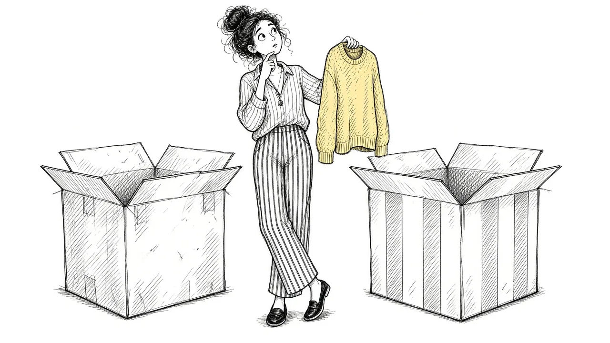

Making Decisions After a Loss: Belongings, Homes, and Hard Choices

After a death, decisions seem to come from every direction. What to do with their clothes. Whether to sell the house. How to handle the car, the accounts, the furniture, the photos. When to go back to work. Whether to move closer to family. All of this while you are grieving, exhausted, and sometimes barely able to think.
This guide is meant to make those decisions feel a little less overwhelming. It covers what tends to need attention early, what can usually wait, and gentle ways to approach the hard choices about belongings, homes, and the future.
Why decisions feel so hard in grief
Grief affects the mind as well as the heart. Many grieving people notice:
- Trouble concentrating.
- Forgetfulness.
- Difficulty making even small choices.
- Feeling foggy or numb.
- Swinging between wanting to keep everything and wanting to get rid of everything.
This is normal. Grief uses up a lot of mental energy, leaving less for decision making. It can help to know this so you do not judge yourself for struggling with choices that once felt simple.
You do not have to decide everything now. Most things can wait until you can think more clearly.
What usually needs attention early
Some tasks after a death are time sensitive. These may vary depending on where you live, but often include:
- Arranging the funeral, burial, or cremation.
- Obtaining copies of the death certificate.
- Notifying close family and friends.
- Notifying certain institutions, such as employers, banks, and government agencies.
- Securing the home and any valuable property.
- Caring for any dependents or pets.
- Locating the will, if there is one.
If you feel overwhelmed, ask someone to help you make a list and divide tasks. A friend, relative, or professional can take on some of these.
What can usually wait
Many decisions feel urgent but can wait for weeks or months. These often include:
- Sorting through belongings.
- Deciding what to do with their clothes.
- Selling or moving out of a home.
- Making major financial changes.
- Deciding whether to move.
Many grief counselors suggest waiting before making big, hard to reverse decisions, unless they are truly necessary. Grief can change how we see things, and decisions made in the first months sometimes look different later.
Belongings: what to keep, what to let go
Deciding what to do with a loved one's belongings can be one of the most emotional tasks after a death. Their things may hold memories, smells, and a sense of their presence.
There is no deadline
Unless you need to clear a space by a certain date, you can take your time. Some people keep a loved one's room untouched for months or years. Others feel better clearing things soon. Both are okay.
Start with easy items
You might begin with items that hold little emotional weight, like toiletries or old paperwork. This can build momentum before tackling more meaningful things.
Sort into categories
Some people find it helpful to sort belongings into groups:
- Keep. Items that hold deep meaning for you.
- Share. Items that others might want.
- Donate. Items that could help someone else.
- Let go. Items that can be discarded.
- Decide later. Items you are not ready to make a choice about.
That last category is important. You do not have to decide everything at once.
Involve others
Family and friends may have strong feelings about certain items. Inviting them to choose keepsakes can be meaningful. It can also prevent conflict later.
Keep a few things close
Many people find comfort in keeping a small number of items nearby: a sweater, a watch, a recipe card, a favorite book. These can help maintain a sense of connection. Our guide to continuing bonds explores this further.
The house
Deciding what to do with a home can be particularly hard. It may hold years of memories. It may also come with financial and practical burdens.
Questions to consider:
- Can I afford to stay here, at least for now?
- Does being here feel comforting or painful, most of the time?
- Is there anything I need to change to make it livable?
- Would moving bring me closer to support or further away?
- Am I making this choice because I want to, or because I feel I should?
If you are not sure, it may help to wait, if you can. Some people find that, after the first year, their feelings about the home become clearer. If the home is closely linked to a painful memory, our guide to facing the hard places may help.
Money and paperwork
Financial decisions after a death can be complicated. There may be accounts to close, bills to pay, and assets to divide.
Some general suggestions:
- Get organized. Keep all papers in one place.
- Ask for help. An accountant, financial advisor, or attorney can guide you.
- Avoid rushing. Major financial moves can usually wait.
- Watch for scams. Grieving people can be targeted by fraud, so be careful with unexpected calls or offers.
Going back to work
Many people have limited time off after a death. Returning to work can be hard, but it can also bring structure and distraction. If you can, talk with your employer about a gradual return, flexible hours, or extra support. It is okay to let coworkers know what you need, such as "I would appreciate if you said their name" or "I would prefer not to talk about it at work."
Decisions with family
When several family members are involved, decisions can become tense. People grieve differently and may have very different ideas about belongings, money, or traditions.
Some things that may help:
- Have important conversations in person or by video rather than text.
- Take breaks if emotions run high.
- Focus on shared values, like honoring the person who died.
- Consider a neutral third party, such as a mediator, if conflict grows.
When you cannot decide
Sometimes grief leaves you frozen. You know a decision needs to be made, but you cannot bring yourself to make it. In these moments:
- Break the decision into smaller pieces.
- Ask someone you trust to help you think it through.
- Give yourself a deadline for revisiting, rather than forcing a choice now.
- Remind yourself that most decisions can be adjusted later.
Our guide to when grief feels overwhelming offers more ways to steady yourself.
A gentler pace
You do not need to make every decision quickly or perfectly. Grief is not a time for efficiency. It is a time for care. The decisions that truly matter will still be there when you are ready to face them.
Each choice you make, whether to keep a sweater or donate a couch, is part of finding a new way to live while holding onto the love that remains. Go slowly. Ask for help. And remember that it is okay to keep what you need for as long as you need it.
This article is for general information and support. It is not medical or mental health advice. If grief has become unbearable or you are thinking about harming yourself, call or text 988 right now.
Related reading

Acceptance and Remembrance: Two Ideas That Shape Healthy Grief
How acceptance and remembrance work together to help people carry grief while staying connected to the person they lost.

Coping With Grief: A Practical Guide
Practical, everyday ways to cope with grief, from the first days through the months and years that follow.

Self-Compassion in Grief
Grieving people are often harsh with themselves. How self-compassion can ease guilt and help you carry loss.